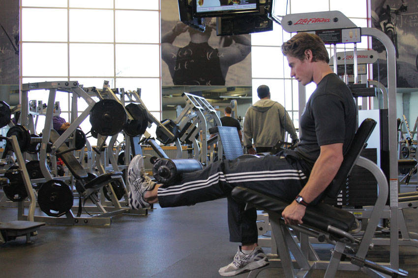

- Seat yourself in the machine and adjust it so that you are positioned properly. The pad should be against the lower part of the shin but not in contact with the ankle. Adjust the seat so that the pivot point is in line with your knee. Select a weight appropriate for your abilities.
- Maintaining good posture, fully extend one leg, pausing at the top of the motion.
- Return to the starting position without letting the weight stop, keeping tension on the muscle.
- Repeat for the desired number of repetitions.